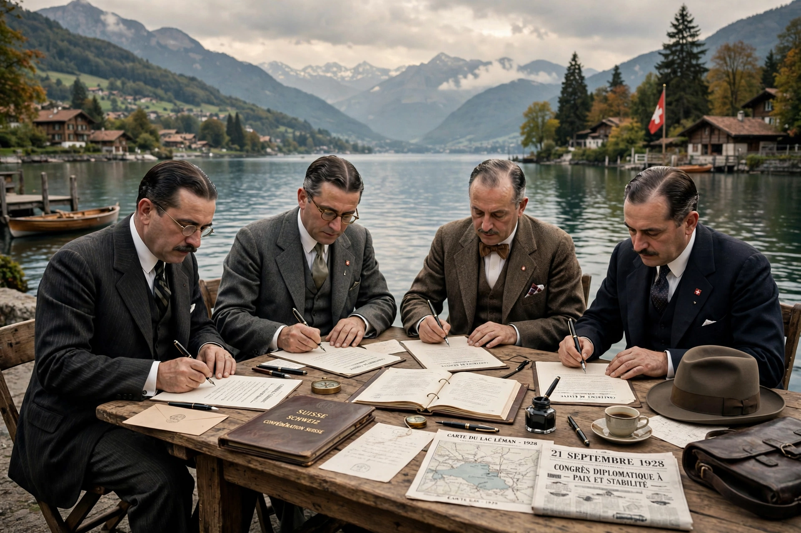

| Locarno Treaties | |
|---|---|
| Signed | 16 October 1925 (initialed); 1 December 1925 (signed, London) |
| Location | Locarno, Switzerland |
| Parties | Germany, France, Belgium, United Kingdom, Italy, Poland, Czechoslovakia |
| Key figures | Gustav Stresemann, Aristide Briand, Austen Chamberlain |
| Effect | Germany accepted its western borders; entered the League of Nations (1926) |

The Locarno Treaties were seven agreements negotiated in Locarno, Switzerland, in October 1925 and formally signed in London on 1 December 1925. In the central Rhineland Pact, Germany, France and Belgium mutually guaranteed their post–First World War borders, with the United Kingdom and Italy as guarantors: Germany accepted its western frontier (including the demilitarised Rhineland) as fixed by the Treaty of Versailles, while Germany's eastern borders with Poland and Czechoslovakia were covered only by arbitration treaties, leaving their final status open.
The treaties inaugurated an era of reconciliation in Western Europe known as the "spirit of Locarno". German foreign minister Gustav Stresemann pursued a policy of fulfilment and rapprochement with France under Aristide Briand; both men, together with British foreign secretary Austen Chamberlain, received Nobel Peace Prizes. In September 1926 Germany joined the League of Nations with a permanent seat on its Council.
The Locarno settlement rested on Germany's voluntary acceptance of the western status quo. It was effectively destroyed when Nazi Germany remilitarised the Rhineland on 7 March 1936, in violation of both Versailles and Locarno; France and Britain protested but took no military action.